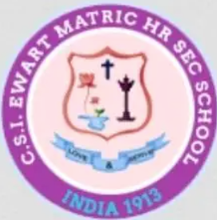

<BODY>


</BODY>
<BODY BGCOLOR="cyan" TEXT="Black">
</BODY>

<UL>
​C.S.I. Ewart Matriculation Higher Secondary School, established in 1913 in Chennai, is a private Christian institution managed by the Church of South India, Madras Diocese. Initially founded as a 'finishing school' for Indian girls by the Church of England Zenana Mission, it aimed to impart Christian values and English etiquette. The school, named after its first benefactor Miss Ewart, began with just three students and has grown to an enrollment of approximately 3,000 students. It offers co-education up to Class 5 and is exclusively for girls from Class 6 onwards. The institution has a rich history of academic excellence and holistic development, with a strong emphasis on extracurricular activities and community involvement. Notable events include annual sports days, inter-house dramatics, and environmental initiatives like the 'Definite Clean Marina Programme'. The school has also been recognized for its contributions to education, receiving grants and awards for its environmental and technological advancements .
</UL>

